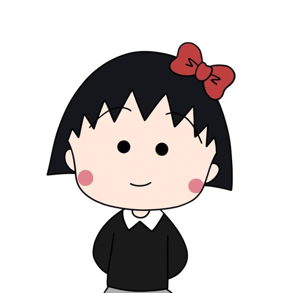

Ready to write your own opinion?
Last meeting, you explored how Analytical Exposition works. Today, it’s your turn! Foxy will guide you step by step until your text is ready to send to Mrs. Anja.


Hi everyone… it’s Maruko. After our big lesson last meeting, I’m sooo tired! I need a long nap today, so my best friend Foxy will be your writing buddy. Please be nice to Foxy and write your best, okay? Zzz…
Hi, study buddy! I’m Foxy 🦊 Don’t worry, Maruko told me everything about last meeting. Hari ini kamu akan menulis Analytical Exposition milikmu sendiri: 4 paragraf, sekitar 150–200 kata. Tenang, kita kerjakan sedikit demi sedikit: pilih topik, kumpulkan ide, lalu tulis paragraf satu per satu. Progresmu otomatis tersimpan di perangkat ini.
1. Tulis dengan kata-katamu sendiri. Copy-paste dari luar diblokir dan dicatat untuk Mrs. Anja.
2. Di Idea Bank kamu boleh menulis dalam bahasa Indonesia. Paragraf akhir ditulis dalam bahasa Inggris.
3. Tetap di halaman ini. Foxy mencatat setiap kali kamu keluar halaman. 👀
Pakai nama & kelas yang sama persis jika ingin melanjutkan tulisan yang tersimpan.
Quick recall 🧠
Tiga soal kilat dari pertemuan kemarin. Setiap jawaban benar = +1 ⭐. Hari ini tidak ada hearts, jadi santai saja!
Your writing topic 🎲
Seperti kemarin, Foxy akan memilihkan topikmu secara acak dari 11 topik. Topik yang sudah terpilih tidak bisa diganti, jadi bersiaplah!
???
Istilah-istilah ini bisa kamu pakai di tulisanmu. Nanti Foxy akan menandainya sebagai technical terms.
What’s your position? / Apa posisimu?
Collect your ideas 💡
Siapa yang terdampak? Apa manfaat atau risikonya? Contoh nyata apa yang pernah kamu lihat atau alami di sekolahmu?
Stuck? Tukar 3 Pop Points untuk satu pancingan ide dari Foxy. Spark hanya pancingan, jadi tulis alasannya dengan kata-katamu sendiri.
👀 Lihat contoh Idea Bank Foxy (topik lain: longer break time)
Topic“School break time should be longer.” · Position: Agree
Reason 1Siswa butuh waktu istirahat supaya bisa fokus lagi.
Example 1Setelah 3 jam pelajaran berturut-turut, banyak teman di kelasku mengantuk.
Reason 2Waktu makan terlalu singkat.
Example 2Antrean kantin panjang; ada teman yang cuma punya 5 menit untuk makan.
Lihat? Brainstorming boleh pakai bahasa Indonesia. Yang penting idenya jelas dulu. 😉
Build your thesis 🏷️
Paragraf pertama punya dua bagian: background (kenalkan isunya) dan position (posisimu + alasan singkat). Klik kerangka kalimat, lalu ganti ___ dengan idemu.
👀 Lihat contoh thesis Foxy (topik: longer break time)
BackgroundAt our school, students only have a 15-minute break after three lessons in a row.
PositionI believe that break time should be extended to 30 minutes because students need enough time to rest and to eat properly.
Perhatikan: posisinya jelas (I believe… should…), lalu ada dua alasan singkat yang nanti dikembangkan di Argument 1 dan 2.
Reiteration 🌸
Tutup tulisanmu dengan menegaskan kembali posisimu dalam 2–3 kalimat. Jangan menyalin thesis. Pakai kata-kata baru dan rangkum alasanmu.
👀 Lihat contoh reiteration Foxy (topik: longer break time)
ReiterationTherefore, a 30-minute break is a beneficial change for our school. It gives students time to rest and to eat well, so they can return to class ready to learn.
Perhatikan: Foxy tidak menyalin thesis. Posisinya tetap sama, tapi kata-katanya baru (a beneficial change), dan kedua alasan dirangkum dalam satu kalimat.
Check your text 🔎
Foxy mewarnai fitur bahasa yang kamu pakai. Ketuk label untuk menyalakan atau mematikan warnanya. Penanda otomatis bisa saja keliru, jadi tetap baca ulang tulisanmu sendiri.
Baca ulang tulisanmu, lalu centang jika sudah benar-benar sesuai.
You did it!
Your own Analytical Exposition is finished.
Ini gambar yang akan kamu upload ke Google Classroom. Nama dan kelasmu sudah tercantum di bagian atas.
Menyiapkan gambar…
Kalau tombol download tidak berfungsi, tekan lama gambar di atas lalu pilih Simpan gambar / Download image.
- Download JPG dengan tombol di atas. File akan tersimpan di folder Download atau Galeri.
- Buka Google Classroom, masuk ke kelas Bahasa Inggris, pilih Tugas kelas, lalu buka tugas .
- Di bagian Tugas Anda, tekan Tambahkan atau buat (di aplikasi HP: Tambahkan lampiran), pilih File, lalu pilih file JPG-mu.
- Tekan Serahkan, lalu konfirmasi. Pastikan statusnya berubah menjadi Diserahkan. ✅